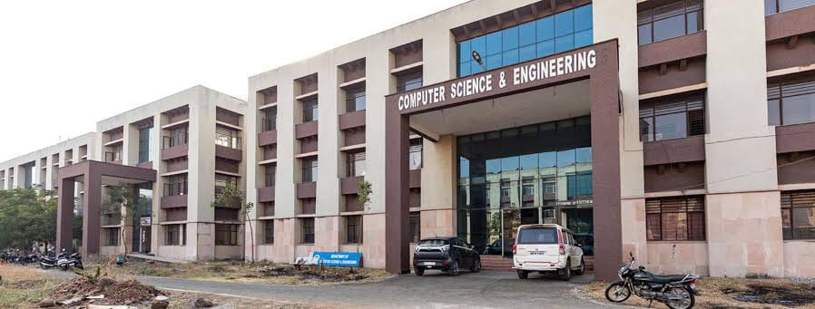

Engineering departments provide students with knowledge and practical skills in different technical fields.

1. Computer Science and Engineering
Focuses on computer programming, software development, artificial intelligence, data structures and algorithms. It helps students develop problem-solving skills and create innovative technology solutions.
2. Information Technology
Focuses on information systems, computer networks, database management, web technologies and cybersecurity. It prepares students to develop and manage modern digital systems.
3. Electronics and Communication Engineering
Deals with electronic devices, communication systems, digital circuits and signal processing. It prepares students to understand modern communication technologies and electronic systems.
4. Electrical Engineering
Focuses on electrical machines, power generation, transmission, control systems and electrical circuits. Students learn how electricity is generated, distributed and used in different industries.
5.Automobile Engineering
Deals with the design, manufacturing and maintenance of automobiles. It covers vehicle systems, automotive technology, engines, electric vehicles and automobile safety.
6.Mechanical Engineering
Deals with the design, manufacturing and maintenance of machines and mechanical systems. It includes subjects like thermodynamics, fluid mechanics, robotics and engineering mechanics.
7. Civil Engineering
Focuses on the planning, designing and construction of buildings, roads, bridges and other infrastructure. It develops skills in structural engineering, construction technology and environmental engineering.
8.PCT
Fcuses on the processing of petroleum and natural gas into useful chemical products. Students learn about industrial processes, chemical engineering principles, polymers and petrochemical industries.